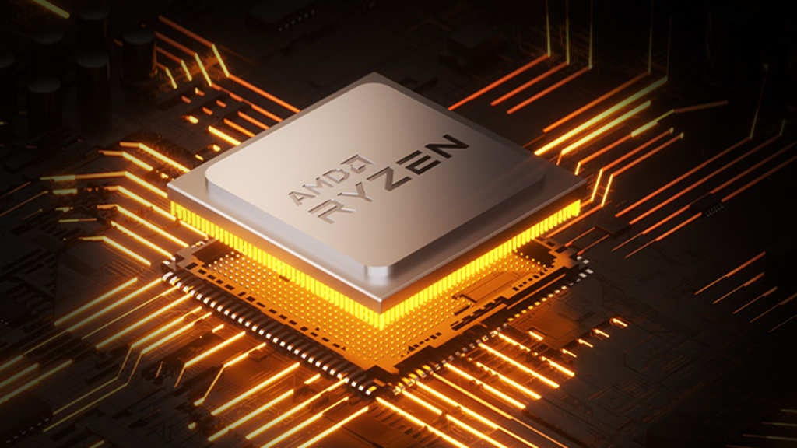

En CPU (Central Processing Unit) er hjernen i en datamaskin. Den utfører instruksjonene i programmer ved å: Hente data og instruksjoner fra minnet Tolke hva som skal gjøres Utføre beregninger eller handlinger Sende resultatene videre Alt fra å åpne et program til å spille av video styres av CPU-en. Hastigheten og hvor mange kjerner den har påvirker hvor raskt datamaskinen kan jobbe.
En GPU (Graphics Processing Unit) er en prosessor laget for å håndtere mange beregninger samtidig, spesielt for grafikk. Den brukes til å: Tegne bilder, video og 3D-grafikk på skjermen Utføre store mengder parallelle beregninger raskt Derfor er GPU-er viktige i spill, videoredigering, kunstig intelligens og vitenskapelige beregninger. De er mer spesialisert enn CPU-er og svært raske når mange små oppgaver skal gjøres parallelt.
RAM (Random Access Memory) er datamaskinens raske korttidsminne. Når du åpner et program, flytter PC-en informasjon fra den trege lagringsdisken (SSD/HDD) og inn i RAM, fordi RAM kan lese og skrive data mye raskere. Dette gjør at programmer reagerer raskt og kjører jevnt. Jo mer RAM en datamaskin har, desto flere programmer og prosesser kan den håndtere samtidig uten å bli treg. Hvis RAM-en blir full, må PC-en bruke lagringsdisken som midlertidig “ekstra minne”, noe som er mye saktere og kan føre til hakking eller dårlig ytelse. RAM finnes i ulike generasjoner som DDR4 og DDR5, der nyere typer ofte er raskere. Fordi RAM bare lagrer data midlertidig, tømmes den hver gang datamaskinen slås av eller startes på nytt.
En harddisk er datamaskinens permanente lagringsenhet, der alle filer, programmer og selve operativsystemet lagres. I motsetning til RAM, som bare lagrer midlertidig, beholder harddisken dataene dine selv når PC-en er slått av. Det finnes to hovedtyper: HDD (Hard Disk Drive): En mekanisk disk med roterende plater og et lesehode som beveger seg. Den gir mye lagringsplass for en lav pris, men er tregere og mer sårbar for støt fordi den har bevegelige deler. SSD (Solid State Drive): Bruker elektroniske flash-brikker og har ingen bevegelige deler. Den er svært mye raskere, mer stillegående og tåler mer, noe som gjør at PC-en starter opp og laster programmer mye raskere. Hvor god harddisken er, påvirker hvor raskt datamaskinen føles i hverdagsbruk, og hvor mye du kan lagre totalt.